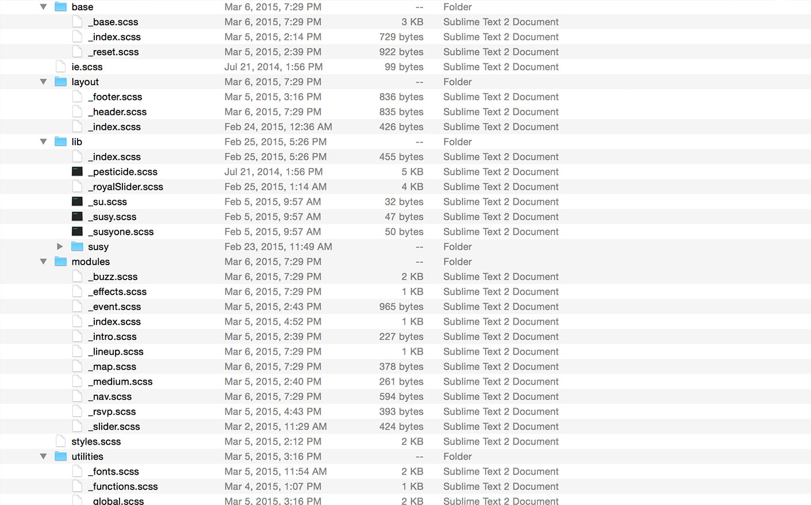

Supercharge
Your CSS with
@minamarkham
The Project
Client: Crumbs & Creme
Description: A local cupcakery website.
Framework: HTML5 & CSS3
Slides + Project: mina.so/super-sass
Project Setup Exercise
- Download the project.
mina.so/super-sass - Open the
exercisesdirectory in your text editor of choice.
Theexercises/originaldirectory is where we'll be doing our work. - Navigate to the
exercises/originaldirectory via the command line.
Runsass -vto verify that Sass is installed. - Open
exercises/original/index.htmlin your browser.
Yay, cupcakes!
What we'll cover
- What is Sass?
- Sass Workflow
- Sass Basics
- Partials &
@import - Nesting
- Variables & Variable Abstraction
- Mixins &
@include - Selector Inheritance &
@extend
- Partials &
- Advanced Sass
- Maps
- Functions
- Lists
@if&@else@eachloop@forloop@whileloop
- Modular Architecture
- Libraries & Tools
- Cupcake Recipes :)
What is Sass?
What is Sass?
“Sass is an extension of CSS that adds power and elegance to the basic language. It allows you to use variables, nested rules, mixins, inline imports, and more, all with
a fully CSS-compatible syntax.”
What is Sass?
CSS Extension
SassScript Language
CSS Preprocessor
SassScript Interpreter
Sass ➳ CSS
Two Syntaxes
.scss (Sassy CSS)
Default syntax; Valid CSS == Valid SCSS
.button {
border: 2px solid #f37;
background-color: #f69;
}
.sass (Indented)
Original syntax, still supported; Haml-esque
.button
border: 2px solid #f37
background-color: #f69
Sass Workflow
gem install sass
sass --watch scss:css
More Sass Commands
$ sass source.scss output.css
source.scss to output.css. Will fail if output directory doesn't exist.$ sass --update source.scss:output.css
source.scss to output.css. Will create directory if it doesn't exist.$ sass --watch --line-comments scss:css
scss folder for changes & create a comment with the line number & file where each rule was defined.$ sass --style expanded source.scss:output.css
Sass Sourcemaps
Sourcemaps tell browsers where to find the Sass that generated the CSS. VERY helpful for debugging.
You must enable sourcemaps in the browser to use this feature.
Workflow Exercise
- Move
css/styles.csstoscss/styles.scss
mkdir sass && mv css/styles.css scss/styles.scss - (Optional): Enable sourcemaps in your browser
- Run Sass:
sass --watch scss:css
- Refresh
index.htmlin the browser and verify the new Sass-based styles are loading properly. - Make some style changes and verify the new styles are compiling and appearing.
Sass Basics
What we'll cover
- Partials &
@import - Nesting
- Variables & Variable Abstraction
- Mixins &
@include - Selector Inheritance &
@extend
Partials & @import
Sass files are split into "partials" for better organization.
Partials & @import
You can then import those partials into your main Sass file.
@import 'utilities/index';
@import 'lib/index';
@import 'base/index';
@import 'layout/index';
@import 'modules/index';
@import 'states/index';
@import 'utilities/fonts';
@import 'shame';
Imports Exercise
- Update your Sass structure to look something like the one previous.
- Move ALL styles from
styles.scssto more modular / organized locations. - Update
styles.scssto@importyour new partials.
sass --watch scss:css
Nesting
Nesting allows you to organize your code in relevant chunks
.scss
pre {
margin: 0;
width: auto;
box-shadow: none;
code {
background: transparent;
border: 6px solid #fff;
box-shadow: 0px 0px 6px rgba(0, 0, 0, 0.3);
min-height: 300px;
max-height: 475px;
padding: 5px 10px;
}
}
.css
pre {
margin: 0;
width: auto;
box-shadow: none; }
pre code {
background: transparent;
border: 6px solid #fff;
box-shadow: 0px 0px 6px rgba(0, 0, 0, 0.3);
min-height: 300px;
max-height: 475px;
padding: 5px 10px; }
Pro Tip
Never go more than
three levels deep
body {
div.container {
div.content {
div.articles {
& > div.post {
div.title {
h1 {
a {
}
}
}
div.content {
p { ... }
ul {
li { ... }
}
}
div.author {
a.display {
img { ... }
}
h4 {
a { ... }
}
p {
a { ... }
}
ul {
li { ... }
}
}
}
}
}
}
}
body { ... }
body div.content div.container { ... }
body div.content div.container div.articles { ... }
body div.content div.container div.articles > div.post { ... }
body div.content div.container div.articles > div.post div.title { ... }
body div.content div.container div.articles > div.post div.title h1 { ... }
body div.content div.container div.articles > div.post div.title h1 a { ... }
body div.content div.container div.articles > div.post div.content { ... }
body div.content div.container div.articles > div.post div.content p { ... }
body div.content div.container div.articles > div.post div.content ul { ... }
body div.content div.container div.articles > div.post div.content ul li { ... }
body div.content div.container div.articles > div.post div.author { ... }
body div.content div.container div.articles > div.post div.author a.display { ... }
body div.content div.container div.articles > div.post div.author a.display img { ... }
body div.content div.container div.articles > div.post div.author h4 { ... }
body div.content div.container div.articles > div.post div.author h4 a { ... }
body div.content div.container div.articles > div.post div.author p { ... }
body div.content div.container div.articles > div.post div.author p a { ... }
body div.content div.container div.articles > div.post div.author ul { ... }
body div.content div.container div.articles > div.post div.author ul li { ... }
Nesting Parent Selectors
The & selector can follow other selectors.
Sass
a {
.footer & {
text-decoration: none;
span {
opacity: .5;
}
}
span {
.navigation & {
display: block;
}
}CSS Output
.footer a {
text-decoration: none;
}
.footer a span {
opacity: .5;
}
.navigation a span {
display: block;
}Nesting Parent Selectors
The & selector can also be combined with strings.
PERFECT for BEM, child elements, states, and modifications.
.scss
.nav {
&-list {
font-size: 25px;
line-height: 1;
margin: 0;
line-height: 63px;
float: right;
> li {
padding: 0 5px !important;
line-height: 1;
padding: 8px 0;
&:first-child { padding-left: 0 !important; }
&:last-child { padding-right: 0 !important; }
}
}
}
.css
.nav-list {
font-size: 25px;
line-height: 1;
margin: 0;
line-height: 63px;
float: right; }
.nav-list > li {
padding: 0 5px !important;
line-height: 1;
padding: 8px 0; }
.nav-list > li:first-child { padding-left: 0 !important; }
.nav-list > li:last-child { padding-right: 0 !important; }
Nesting Properties
You can also nest namespaced properties
Sass
a {
border: {
color: #deedee;
style: solid;
width: 2px;
}
}CSS Output
a {
border-color: #deedee;
border-style: solid;
border-width: 2px;
}Nesting Exercise
NEST ALL THE THINGS!!
& selector.sass --watch scss:css
Variables
Placeholders for values used multiple times.
.scss
$font-family-display: 'Pacifico', cursive;
$pink: #fe4578;
h1 {
font-family: $font-family-display;
background: $pink;
}
.css
h1 {
font-family: 'Pacifico', cursive;
background: #fe4578;
}
Variable Abstraction
.scss
// Descriptive colors:
$hopbush: #c69;
$bouquet: #b37399;
// Main color palette
$color-primary: $hopbush;
$color-secondary: $bouquet;
.btn {background: $color-primary;}
.btn-secondary {background: $color-secondary;}
.css
.btn {background: #c69;}
.btn-secondary {background: #b37399;}
Variable Scope
Variables are only available within the level of nested selectors where they're defined. If they're defined outside of any nested selectors, they're available everywhere.
— Sass DocumentationVariable Scope
$border-width: 4px; // Global
a {
$color: orange; // Local
border: $border-width solid $color;
}
p {
border: $border-width solid $color;
// ERROR!! Undefined variable "$color"
}Variables Exercise
global partial in your utilities directory and @import it in your main .scss file.sass --watch scss:css
Mixins & @include
Mixins are bits of code you @include elsewhere in your styles.
.scss
@mixin mq($breakpoint, $query: 'min-width', $type: 'screen') {
@media #{$type} and (#{$query}: #{$breakpoint}) { @content; }
}
.cupcake {
width: 450px;
@include mq(500px) {width: 200px;};
}
.css
.cupcake {
width: 450px;
@media screen and (min-width: 500px) { width: 200px; }
}
Mixins & @include
- We define a mixin with the
@mixindirective. - We reference a mixin with the
@includedirective. - Mixins must be defined before they're referenced.
- Mixins can be used with any other style rules.
- You can nest within mixins just like you can elsewhere.
- Mixins accept optional arguments.
Mixins Arguments
Mixins are great for repeated blocks of styles where the values differ from case to case.
Sass
@mixin rounded-corners($radius: 5px) {
-webkit-border-radius: $radius;
-moz-border-radius: $radius;
border-radius: $radius;
}
.header {
@include rounded-corners(5px);
// ...
}
.footer {
@include rounded-corners(10px);
// ...
}CSS Output
.header {
-webkit-border-radius: 5px;
-moz-border-radius: 5px;
border-radius: 5px;
// ...
}
.footer {
-webkit-border-radius: 10px;
-moz-border-radius: 10px;
border-radius: 10px;
// ...
}Mixin Variable Interpolation
Sass
@mixin mq($breakpoint, $query: 'min-width', $type: 'screen') {
@media #{$type} and (#{$query}: #{$breakpoint}) { @content; }
}
.cupcake {
width: 450px;
@include mq(500px) {width: 200px;};
}
.cupcake-with-toppings {
width: 450px;
@include mq(300px) {width: 100px;};
}CSS Output
.cupcake {
width: 450px;
@media screen and (min-width: 500px) { width: 200px; }
}
.cupcake-with-toppings {
width: 450px;
@media screen and (min-width: 300px) { width: 100px; }
}Mixins Exercise
- Look at the examples in the
_mixins.scssfile in your utilities folder. - Create a
@mixinfor media queries.
ie.@media and (min-width) - Look for other combinations of repeated styles or complexities that could be abstracted.
sass --watch scss:css
@extend (Selector Inheritance)
Extending allows selectors to inherit the styles of other selectors, while adding more styles to the element.
.scss
.cupcake {
background-image: url("../img/cupcake.png");
}
.cupcake-with-toppings {
@extend .cupcake;
&:after {
content: " ";
background-image: url("../img/toppings.png");
}
}
.css
.cupcake, .cupcake-with-toppings {
background-image: url("../img/cupcake.png");
}
.cupcake-with-toppings:after {
content: " ";
background-image: url("../img/toppings.png");
}
.cupcake
.cupcake-with-toppings
Placeholder Selectors
Placeholders are "invisible" until extended
.scss
// this will not output
%cupcake {
background-image: url("../img/cupcake.png");
}
// this will
.cupcake-with-toppings {
@extend %cupcake;
&:after {
content: " ";
background-image: url("../img/toppings.png");
}
}
.css
.cupcake-with-toppings:after {
content: " ";
background-image: url("../img/toppings.png");
}
%cupcake
.cupcake-with-toppings
@mixin vs. @extend
@includes duplicates CSS
use when you need to alter variables@extend comma-delineates selectors
reuse code with no extra output@extend Exercise
- Create a placeholder for
%clearfixand@extendit on the appropriate selectors. @extendthat class on elements that match the pattern.
Hint: checkout the layout styles.
sass --watch scss:css
Advanced Sass
What we'll cover
- Maps
- Functions
- Lists
@if&@else@eachloop@forloop@whileloop
Maps
Maps are structured in key: value pairs and accessed with map-get($map-name, key).
.scss
$zindex: (
modal : 9000,
overlay : 8000,
dropdown : 7000,
header : 6000,
footer : 5000,
pseduo : 4000,
bottom : -999999
);
.dropdown {
z-index: map-has-key($zindex, modal);
}
.css
.dropdown {
z-index: 7000;
}
Maps Exercise
- Create a map for your color values.
- Use
map-get($map-name, key).to access values in your map.
sass --watch scss:css
@function
Use @function to define the function, @return to get the value.
@function fluidize($target, $context) {
@return ($target / $context) * 100%; }
.sidebar { width: fluidize(350px, 1000px); // => width: 35%; }
@function Exercise
- Create a function that will convert
pxtoem. - Use that function in your styles to convert px values to ems.
sass --watch scss:css
Lists
$fonts: 'YanoneKaffeesatz-ExtraLight', 'YanoneKaffeesatz-Light', 'YanoneKaffeesatz-Regular', 'YanoneKaffeesatz-Bold';
Using lists
.scss
$fonts: 'YanoneKaffeesatz-ExtraLight', 'YanoneKaffeesatz-Light', 'YanoneKaffeesatz-Regular', 'YanoneKaffeesatz-Bold';
@each $font-face in $fonts {
@font-face {
font-family: $font-face;
src: url('../fonts/#{$font-face}.eot'); // IE9 Compat Modes
src: url('../fonts/#{$font-face}.eot?#iefix') format('embedded-opentype'), // IE6-IE8
url('../fonts/#{$font-face}.woff') format('woff'), // Modern Browsers
url('../fonts/#{$font-face}.ttf') format('truetype'), // Safari, Android, iOS
url('../fonts/#{$font-face}.svg##{$font-face}') format('svg'); // Legacy iOS
font-style: normal;
font-weight: normal;
}
}
.css
@font-face {
font-family: "YanoneKaffeesatz-ExtraLight";
src: url("../fonts/YanoneKaffeesatz-ExtraLight.eot");
src: url("../fonts/YanoneKaffeesatz-ExtraLight.eot?#iefix") format("embedded-opentype"), url("../fonts/YanoneKaffeesatz-ExtraLight.woff") format("woff"), url("../fonts/YanoneKaffeesatz-ExtraLight.ttf") format("truetype"), url("../fonts/YanoneKaffeesatz-ExtraLight.svg#YanoneKaffeesatz-ExtraLight") format("svg");
font-style: normal;
font-weight: normal; }
@font-face {
font-family: "YanoneKaffeesatz-Light";
src: url("../fonts/YanoneKaffeesatz-Light.eot");
src: url("../fonts/YanoneKaffeesatz-Light.eot?#iefix") format("embedded-opentype"), url("../fonts/YanoneKaffeesatz-Light.woff") format("woff"), url("../fonts/YanoneKaffeesatz-Light.ttf") format("truetype"), url("../fonts/YanoneKaffeesatz-Light.svg#YanoneKaffeesatz-Light") format("svg");
font-style: normal;
font-weight: normal; }
@font-face {
font-family: "YanoneKaffeesatz-Regular";
src: url("../fonts/YanoneKaffeesatz-Regular.eot");
src: url("../fonts/YanoneKaffeesatz-Regular.eot?#iefix") format("embedded-opentype"), url("../fonts/YanoneKaffeesatz-Regular.woff") format("woff"), url("../fonts/YanoneKaffeesatz-Regular.ttf") format("truetype"), url("../fonts/YanoneKaffeesatz-Regular.svg#YanoneKaffeesatz-Regular") format("svg");
font-style: normal;
font-weight: normal; }
@font-face {
font-family: "YanoneKaffeesatz-Bold";
src: url("../fonts/YanoneKaffeesatz-Bold.eot");
src: url("../fonts/YanoneKaffeesatz-Bold.eot?#iefix") format("embedded-opentype"), url("../fonts/YanoneKaffeesatz-Bold.woff") format("woff"), url("../fonts/YanoneKaffeesatz-Bold.ttf") format("truetype"), url("../fonts/YanoneKaffeesatz-Bold.svg#YanoneKaffeesatz-Bold") format("svg");
font-style: normal;
font-weight: normal; }
Directives Conditionals
$theme: light !default;
body {
@if $theme == dark { background: #000;}
@else if $theme == dark-mid { background: #4f4f4f;}
@else if $theme == light-mid { background: #afafaf;}
@else { background: #fff;}
}@each loop
.scss
$fonts: 'YanoneKaffeesatz-ExtraLight', 'YanoneKaffeesatz-Light', 'YanoneKaffeesatz-Regular', 'YanoneKaffeesatz-Bold';
@each $font-face in $fonts {
@font-face {
font-family: $font-face;
src: url('../fonts/#{$font-face}.eot'); // IE9 Compat Modes
src: url('../fonts/#{$font-face}.eot?#iefix') format('embedded-opentype'), // IE6-IE8
url('../fonts/#{$font-face}.woff') format('woff'), // Modern Browsers
url('../fonts/#{$font-face}.ttf') format('truetype'), // Safari, Android, iOS
url('../fonts/#{$font-face}.svg##{$font-face}') format('svg'); // Legacy iOS
font-style: normal;
font-weight: normal;
}
}
.css
@font-face {
font-family: "YanoneKaffeesatz-ExtraLight";
src: url("../fonts/YanoneKaffeesatz-ExtraLight.eot");
src: url("../fonts/YanoneKaffeesatz-ExtraLight.eot?#iefix") format("embedded-opentype"), url("../fonts/YanoneKaffeesatz-ExtraLight.woff") format("woff"), url("../fonts/YanoneKaffeesatz-ExtraLight.ttf") format("truetype"), url("../fonts/YanoneKaffeesatz-ExtraLight.svg#YanoneKaffeesatz-ExtraLight") format("svg");
font-style: normal;
font-weight: normal; }
@font-face {
font-family: "YanoneKaffeesatz-Light";
src: url("../fonts/YanoneKaffeesatz-Light.eot");
src: url("../fonts/YanoneKaffeesatz-Light.eot?#iefix") format("embedded-opentype"), url("../fonts/YanoneKaffeesatz-Light.woff") format("woff"), url("../fonts/YanoneKaffeesatz-Light.ttf") format("truetype"), url("../fonts/YanoneKaffeesatz-Light.svg#YanoneKaffeesatz-Light") format("svg");
font-style: normal;
font-weight: normal; }
@font-face {
font-family: "YanoneKaffeesatz-Regular";
src: url("../fonts/YanoneKaffeesatz-Regular.eot");
src: url("../fonts/YanoneKaffeesatz-Regular.eot?#iefix") format("embedded-opentype"), url("../fonts/YanoneKaffeesatz-Regular.woff") format("woff"), url("../fonts/YanoneKaffeesatz-Regular.ttf") format("truetype"), url("../fonts/YanoneKaffeesatz-Regular.svg#YanoneKaffeesatz-Regular") format("svg");
font-style: normal;
font-weight: normal; }
@font-face {
font-family: "YanoneKaffeesatz-Bold";
src: url("../fonts/YanoneKaffeesatz-Bold.eot");
src: url("../fonts/YanoneKaffeesatz-Bold.eot?#iefix") format("embedded-opentype"), url("../fonts/YanoneKaffeesatz-Bold.woff") format("woff"), url("../fonts/YanoneKaffeesatz-Bold.ttf") format("truetype"), url("../fonts/YanoneKaffeesatz-Bold.svg#YanoneKaffeesatz-Bold") format("svg");
font-style: normal;
font-weight: normal; }
@for loop (through)
.scss
$columns: 4;
@for $i from 1 through $columns {
.cols-#{$i} {
width: ((100 / $columns) * $i) * 1%;
}
}
.css
.cols-1 {
width: 25%;
}
.cols-2 {
width: 50%;
}
.cols-3 {
width: 75%;
}
.cols-4 {
width: 100%;
}
@for loop (to)
.scss
$columns: 4;
@for $i from 1 to $columns {
.cols-#{$i} {
width: ((100 / $columns) * $i) * 1%;
}
}
.css
.cols-1 {
width: 25%;
}
.cols-2 {
width: 50%;
}
.cols-3 {
width: 75%;
}
@while loop
“The @while loop has absolutely
no use case in a real Sass project, especially since there is no way to break a loop from the inside.
Do not use it.”
Logic Exercise
- Create a list of font faces used in your project.
- Use an
@eachto print the@font-facestyles for every font.
sass --watch scss:css
Modular Architecture
Modular Architecture Explained
Modular architecture is the abstraction of repetition into "objects".
- Objects / Modules / Blocks
.header,.footer,.comment,.button, etc. - Parent - Child Relationships
.media,.media-img,.media-body, etc. - Modifiers & States
.btn-primary,.btn-small,.btn.is-selected, etc.
Modular Architecture Methodology
- Thinking in modules with various states.
.btn,.btn-primary,.btn-disabled - Classes vs. IDs vs. Child Selectors
Take that, specificity! - Naming Conventions
Semantic.content,.news-title,.callNow
Presentational.grid-col-9,.btn-small,.btn-primary
Modular Architecture Goals
- Modularity
Added new page. Wrote 0 lines of CSS. - Scalability
I got 99 problems, but specificity ain't one. - Maintainability
Oh, you wanted a big button?.btn-large. BOOM. - DRY & Organized
That's just plain smart.
SMACSS Scalable & Modular Architecture for CSS
➤ smacss.comSassy Starter
➤ mina.so/sassyStarter
+ scss/
|
| + base/ # reset, typography, site-wide
| |-- _index.scss # imports for all base styles
| |-- _base.scss # base styles
| |-- _normalize.scss # normalize v3.0.1
|
| + layout/ # major components, e.g., header, footer etc.
| |-- _index.scss # imports for all layout styles
|
| + modules/ # minor components, e.g., buttons, widgets etc.
| |-- _index.scss # imports for all modules
|
| + states/ # js-based classes, alternative states
| |-- _index.scss # imports for all state styles
| |-- _states.scss # state rules
| |-- _print.scss # print styles
| |-- _touch.scss # touch styles
|
| + themes/ # (optional) separate theme files
| |-- beccapurple.scss # rename to appropriate theme name
|
| + utilities/ # non-CSS outputs (i.e. mixins, vars)
| |-- _index.scss # imports for all mixins + global project vars
| |-- _fonts.scss # font mixins
| |-- _functions.scss # ems to rems conversion, etc.
| |-- _global.scss # global variables
| |-- _helpers.scss # placeholder helper classes
| |-- _mixins.scss # media queries, CSS3, etc.
|
| + lib/ # third party styles
| | _index.scss # imports for third party styles
| | _pesticide.scss # CSS pesticide
| | ...
|
| + ie.scss # IE specific Sass file
| + styles.scss # primary Sass file
| + _shame.scss # because hacks happen
Libraries & Tools
Sassmeister
➤ sassmeister.comCompass
➤ compass-style.orgBourbon
➤ bourbon.ioSusy
➤ susy.oddbird.netColorHighlighter for Sublime
➤ mina.so/colorHighlighterSass Director
➤ mina.so/sass-directorSache
➤ sache.inWrap Up
Sass Closing Tips
- Take it one step at a time.
- Check your output.
- Mind your
@mixins and@mediaqueries. - Don't
@extendtoo much. - Enable Sass sourcemaps for debugging
- Modules, modules, modules.